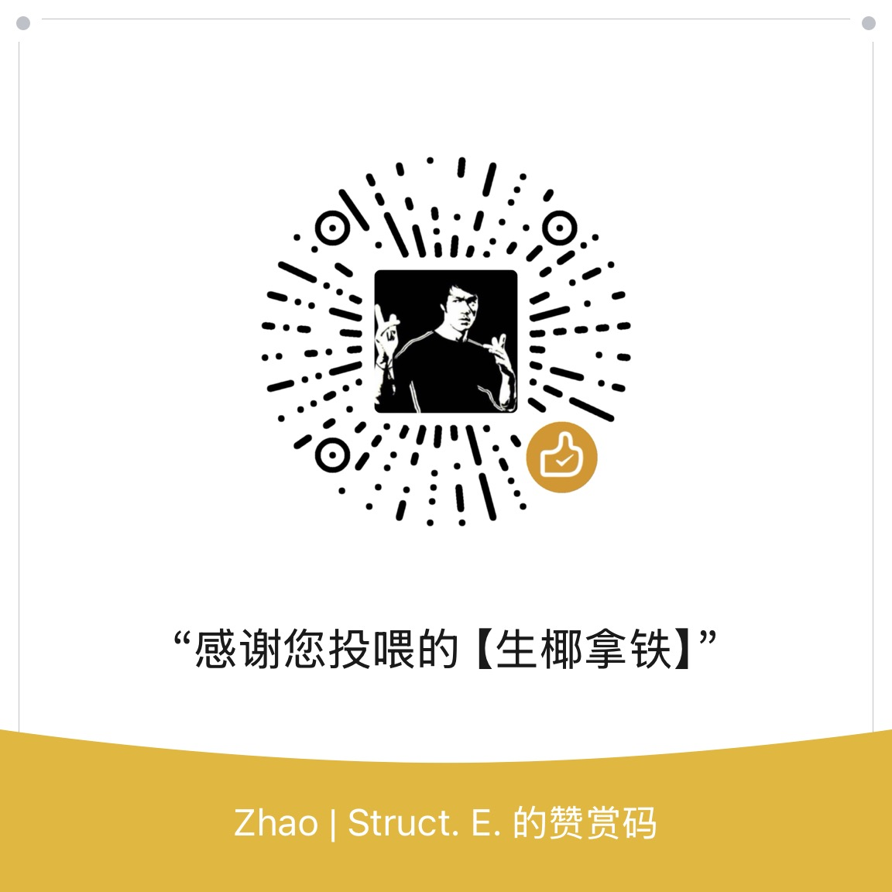

图片未加载，请检查 ma.jpg 是否存在'">34 岁起每日定投 200 元，60 岁退休目标年提取 5 万元。基准情景下 90 岁模拟成功率 100%， 90 岁中位总资产 585.4 万元（名义值）。 覆盖中国股票、美国股票、中国债券、黄金四类资产，含动态提取、回撤保护与现金池缓冲。
| 资产 | 计价货币 | 压力收益率 | 保守收益率 | 中枢收益率 | 乐观收益率 | 年化波动率 |
|---|---|---|---|---|---|---|
| 中证 A500 | 人民币 | 2.0% / 1.5% | 4.5% | 6.5% | 9.0% | 22.0% |
| 华夏亚债中国指数 | 人民币 | 1.5% / 1.0% | 2.5% | 3.0% | 3.8% | 2.5% |
| 标普 500（美元） | 美元 | 2.5% / 1.5% | 5.5% | 7.0% | 8.5% | 17.0% |
| 黄金（人民币） | 人民币 | 1.5% / 1.0% | 3.5% | 4.5% | 6.0% | 16.0% |
| 美元兑人民币汇率变动 | — | -3.0% | -0.5% | 0.0% | +3.0% | 4.5% |
注：标普 500 人民币净收益 = (1 + 美元收益 - 1.00%) × (1 + 汇率变动) - 1；组合净收益率 = Σ(资产比例 × 资产净收益率)。
过去 27 年中国 CPI 同比增速均值约 1.90%，2025 年全年 CPI 与上年持平，2026 年基于前 8 个月累计同比涨幅估算为 0.9%（估算值）。方案假设的 2.5% 通胀率偏保守，为长期购买力提供更稳妥的缓冲。
| 基金名称 | 代码 | 类别 | 配置比例 | 显性费率 | 综合费率 |
|---|---|---|---|---|---|
| 华泰柏瑞中证 A500 ETF 联接 A | 022438 | 中国股票 | 50% | 0.20% | 0.53% |
| 华夏亚债中国指数 A | 001021 | 中国债券 | 25% | 0.18% | 0.23% |
| 博时标普 500 ETF 联接 A | 050025 | 美国股票 | 20% | 0.80% | 1.00% |
| 华夏黄金 ETF 联接 A | 008701 | 黄金 | 5% | 0.20% | 0.49% |
| 加权平均 | — | — | 100% | 0.32% | 0.55% |
⚠️ 基金代码与费率仅为示例，请以基金公司最新公告为准。
重要提示一（金额口径）：表中所有金额均为名义值（当年实际货币金额，未扣除通胀影响）。如需折算为 60 岁购买力，请参考"平均提取额"等指标。
重要提示二（现金池动用年数定义）：该指标统计"当年提取时从现金池扣款"的年份数，含两种性质完全不同的情形：① 困难年真正兜底（压力仅 1.1 年）；② 丰收年"先提取后回补"的过路循环（乐观高达 21.9 年）。数值高低不能直接对应资产好坏。
| 情景 | 90 岁成功率 | 95 岁成功率 | 90 岁中位（万，名义） | 90 岁 5% 分位（万，名义） | 95 岁中位（万，名义） | 95 岁 5% 分位（万，名义） | 平均提取（元） | 保底失败概率 | 提取缺口概率 | 现金池动用年数 |
|---|